CODING AGENTS AS PIXEL WORLD MODELS
traex/DeepSeek-V4.1-Flash · material_0046
点击播放 · 原生 RGB 像素
此结果可播放，但该运行尚未通过最终提交审核。页面展示不代表评测通过。
逐轮保存的候选
回放视频、检查图与代码变化。
每份候选均可单独播放。实际图片检查记录在下方工具轨迹中。
候选 01播放与检查图
点击播放 · 原生 RGB 像素

展开代码变化
--- 上一保存版本
+++ 本次保存版本
@@ -0,0 +1,453 @@
+from __future__ import annotations
+
+import argparse
+import math
+from pathlib import Path
+
+import numpy as np
+from PIL import Image, ImageDraw, ImageFilter
+from scipy import ndimage
+
+import artifact_io
+
+
+ROOT = Path(__file__).resolve().parent
+SS = 4
+W, H = 256, 144
+FW, FH = W * SS, H * SS
+TAU = math.tau
+
+
+def smoothstep(x):
+ x = np.clip(x, 0.0, 1.0)
+ return x * x * (3.0 - 2.0 * x)
+
+
+def ease(x):
+ x = np.clip(x, 0.0, 1.0)
+ return x * x * x * (x * (x * 6.0 - 15.0) + 10.0)
+
+
+def normalize(a):
+ lo, hi = np.percentile(a, 1.0), np.percentile(a, 99.0)
+ return np.clip((a - lo) / max(hi - lo, 1e-6), 0.0, 1.0)
+
+
+def fbm(shape, seed, scales=(2.5, 5.0, 11.0, 23.0, 51.0), weights=(0.48, 0.25, 0.14, 0.08, 0.05)):
+ rng = np.random.default_rng(seed)
+ field = np.zeros(shape, np.float32)
+ for scale, weight in zip(scales, weights):
+ small = rng.normal(size=(max(3, int(shape[0] / scale)), max(3, int(shape[1] / scale))))
+ layer = ndimage.zoom(small, (shape[0] / small.shape[0], shape[1] / small.shape[1]), order=3)
+ layer = layer[: shape[0], : shape[1]]
+ if layer.shape != shape:
+ layer = np.pad(layer, ((0, shape[0] - layer.shape[0]), (0, shape[1] - layer.shape[1])), mode="reflect")
+ field += weight * normalize(layer)
+ return normalize(field)
+
+
+def paint_mask(draw_fn):
+ image = Image.new("L", (FW, FH), 0)
+ draw_fn(ImageDraw.Draw(image))
+ return np.asarray(image, dtype=np.float32) / 255.0
+
+
+def mask_union(*masks):
+ return np.maximum.reduce(masks)
+
+
+def shade(height, light=(-0.58, -0.70, 0.62), specular_power=32.0):
+ gy, gx = np.gradient(height.astype(np.float32))
+ scale = 7.0
+ nx, ny = -gx * scale, -gy * scale
+ nz = np.ones_like(height)
+ inv = 1.0 / np.sqrt(nx * nx + ny * ny + nz * nz)
+ nx, ny, nz = nx * inv, ny * inv, nz * inv
+ lx, ly, lz = light
+ ln = math.sqrt(lx * lx + ly * ly + lz * lz)
+ lx, ly, lz = lx / ln, ly / ln, lz / ln
+ diffuse = np.clip(nx * lx + ny * ly + nz * lz, 0.0, 1.0)
+ hx, hy, hz = lx, ly, lz + 1.0
+ hn = math.sqrt(hx * hx + hy * hy + hz * hz)
+ spec = np.power(np.clip((nx * hx + ny * hy + nz * hz) / hn, 0.0, 1.0), specular_power)
+ return diffuse, spec, (nx, ny, nz)
+
+
+def composite(base, layer, alpha):
+ alpha = alpha[..., None]
+ return base * (1.0 - alpha) + layer * alpha
+
+
+def make_wood():
+ yy, xx = np.mgrid[0:FH, 0:FW].astype(np.float32)
+ x = xx / SS
+ y = yy / SS
+
+ broad = fbm((FH, FW), 7, scales=(22, 46, 93), weights=(0.55, 0.30, 0.15))
+ fine = fbm((FH, FW), 18, scales=(1.2, 2.4, 5.0), weights=(0.55, 0.30, 0.15))
+ warp = ndimage.gaussian_filter(fbm((FH, FW), 28, scales=(14, 32), weights=(0.65, 0.35)), (9, 2))
+ grain = 0.5 + 0.5 * np.sin((x * 1.42 + warp * 11.0 + 2.8 * np.sin(y * 0.018)) * math.pi)
+ grain = ndimage.gaussian_filter(grain, (1.4, 0.45))
+ grain = np.clip(grain, 0.0, 1.0)
+
+ planks = np.zeros_like(x)
+ seams = np.zeros_like(x)
+ for edge in (0.0, 49.0, 105.0, 158.0, 213.0, 256.0):
+ d = np.abs(x - edge)
+ seams += np.exp(-(d / 1.25) ** 2)
+ seams = np.clip(seams, 0.0, 1.0)
+ for edge in (49.0, 105.0, 158.0, 213.0):
+ planks += smoothstep((x - edge) / 7.0) * 0.02
+
+ # Warm walnut with a cool outdoor ambience and restrained directional light.
+ light = 0.84 + 0.22 * np.exp(-(((x - 34.0) / 90.0) ** 2 + ((y - 24.0) / 100.0) ** 2))
+ base = np.empty((FH, FW, 3), np.float32)
+ base[..., 0] = 66 + 33 * broad + 20 * grain + 15 * fine + 18 * light - 23 * seams
+ base[..., 1] = 40 + 23 * broad + 12 * grain + 10 * fine + 12 * light - 19 * seams
+ base[..., 2] = 25 + 15 * broad + 7 * grain + 7 * fine + 8 * light - 14 * seams
+
+ # A few darker grain channels keep the background from looking like flat noise.
+ channels = smoothstep((grain - 0.73) / 0.09) * (0.38 + 0.30 * fine)
+ base *= (1.0 - 0.22 * channels[..., None])
+
+ # Raised rectangular panel and its shadowed molding.
+ panel_dist = np.minimum.reduce([
+ np.abs(x - 17.0), np.abs(x - 239.0), np.abs(y - 9.0), np.abs(y - 135.0)
+ ])
+ panel = (x > 17.0) & (x < 239.0) & (y > 9.0) & (y < 135.0)
+ panel_h = np.where(panel, np.clip(panel_dist / 3.0, 0.0, 1.0), 0.0)
+ pdiff, pspec, _ = shade(panel_h, specular_power=14.0)
+ base *= (0.79 + 0.29 * pdiff[..., None])
+ base += 12.0 * pspec[..., None]
+ inner = (x > 25.0) & (x < 231.0) & (y > 16.0) & (y < 128.0)
+ inner_d = ndimage.distance_transform_edt(inner)
+ bevel = np.where(inner, np.clip(inner_d / 3.5, 0.0, 1.0), 0.0)
+ idiff, ispec, _ = shade(bevel, specular_power=18.0)
+ base *= (0.91 + 0.14 * idiff[..., None])
+ base += 6.0 * ispec[..., None]
+
+ # Soft ambient occlusion in the panel recess and at the door seams.
+ base *= (1.0 - 0.16 * smoothstep((6.0 - np.minimum.reduce([
+ np.abs(x - 17.0), np.abs(x - 239.0), np.abs(y - 9.0), np.abs(y - 135.0)
+ ])) / 6.0))[..., None]
+ base *= (1.0 - 0.34 * seams[..., None])
+ return np.clip(base, 0.0, 255.0)
+
+
+def spline_polygon(points, samples=420):
+ from scipy.interpolate import splprep, splev
+
+ pts = np.asarray(points, np.float32)
+ tck, _ = splprep([pts[:, 0], pts[:, 1]], s=0, per=True)
+ u = np.linspace(0.0, 1.0, samples, endpoint=False)
+ return list(zip(*splev(u, tck)))
+
+
+def build_geometry():
+ knocker_pts = spline_polygon([
+ (128, 15), (143, 19), (155, 30), (161, 45), (157, 65),
+ (153, 84), (145, 105), (133, 119), (128, 122), (123, 119),
+ (111, 105), (103, 84), (99, 65), (95, 45), (101, 30), (113, 19),
+ ])
+
+ plate = paint_mask(lambda d: d.polygon([(int(px * SS), int(py * SS)) for px, py in knocker_pts], fill=255))
+ plate = ndimage.gaussian_filter(plate, 0.45)
+
+ # Ring: a slightly elliptical forged torus, with a raised central rib.
+ yy, xx = np.mgrid[0:FH, 0:FW].astype(np.float32)
+ dx = (xx / SS - 128.0) / 1.02
+ dy = (yy / SS - 73.0) / 1.04
+ rho = np.sqrt(dx * dx + dy * dy)
+ rc, rt = 31.0, 5.15
+ ring_alpha = smoothstep((rc + rt - rho) / 0.72) * smoothstep((rho - (rc - rt)) / 0.72)
+ torus_z = np.sqrt(np.clip(rt * rt - (rho - rc) ** 2, 0.0, None))
+ rib = 0.48 * np.exp(-((rho - rc) / 1.35) ** 2)
+ ring_h = torus_z + rib
+
+ boss = np.zeros_like(plate)
+ petals = np.zeros_like(plate)
+ for angle in np.linspace(0.0, TAU, 10, endpoint=False):
+ cx = 128.0 + 12.0 * math.cos(angle)
+ cy = 31.5 + 12.0 * math.sin(angle)
+ rr = 7.2 if abs(math.cos(angle)) > 0.55 else 6.1
+ petal = paint_mask(lambda d, cx=cx, cy=cy, rr=rr: d.ellipse(
+ ((cx - rr) * SS, (cy - rr * 0.72) * SS, (cx + rr) * SS, (cy + rr * 0.72) * SS), fill=255
+ ))
+ petals = np.maximum(petals, petal)
+ boss = mask_union(petals, paint_mask(lambda d: d.ellipse((109 * SS, 18 * SS, 147 * SS, 47 * SS), fill=255)))
+ boss = ndimage.gaussian_filter(boss, 0.5)
+
+ # Decorative side scrolls embossed into the backplate.
+ scroll_img = Image.new("L", (FW, FH), 0)
+ sd = ImageDraw.Draw(scroll_img)
+ for side in (-1, 1):
+ x0 = 128.0 + side * 18.0
+ sd.arc(((x0 - 13.0) * SS, 38 * SS, (x0 + 13.0) * SS, 70 * SS), 75, 280, fill=180, width=2 * SS)
+ sd.arc(((x0 - 8.0) * SS, 48 * SS, (x0 + 8.0) * SS, 66 * SS), 10, 320, fill=125, width=1 * SS)
+ scroll = np.asarray(scroll_img, np.float32) / 255.0
+ scroll = ndimage.gaussian_filter(scroll, 0.8)
+
+ # Raised border and inner incised groove.
+ dist = ndimage.distance_transform_edt(plate > 0.5) / SS
+ plate_h = np.where(plate > 0.5, 1.65 * np.sqrt(np.clip(dist / 8.0, 0.0, 1.0)), 0.0)
+ plate_h += 0.95 * np.exp(-((dist - 4.4) / 1.25) ** 2)
+ plate_h -= 0.55 * np.exp(-((dist - 2.2) / 0.62) ** 2)
+ plate_h += 0.62 * scroll
+
+ # Small rivets around the shield.
+ rivets = np.zeros_like(plate)
+ rivet_centers = [(108, 35), (148, 35), (106, 73), (150, 73), (115, 103), (141, 103)]
+ for cx, cy in rivet_centers:
+ rivets = np.maximum(rivets, paint_mask(lambda d, cx=cx, cy=cy: d.ellipse(
+ ((cx - 2.6) * SS, (cy - 2.6) * SS, (cx + 2.6) * SS, (cy + 2.6) * SS), fill=255
+ )))
+ rivets = ndimage.gaussian_filter(rivets, 0.35)
+
+ ring_shadow = ndimage.gaussian_filter(np.roll(ring_alpha, (6 * SS, 3 * SS), axis=(0, 1)), 4.2 * SS)
+ boss_shadow = ndimage.gaussian_filter(np.roll(boss, (5 * SS, 3 * SS), axis=(0, 1)), 3.4 * SS)
+ plate_shadow = ndimage.gaussian_filter(np.roll(plate, (7 * SS, 4 * SS), axis=(0, 1)), 5.5 * SS)
+
+ knocker_mask = np.clip(plate + ring_alpha + boss + rivets, 0.0, 1.0)
+ return {
+ "plate": plate,
+ "plate_h": plate_h,
+ "plate_dist": dist,
+ "scroll": scroll,
+ "ring": ring_alpha,
+ "ring_h": ring_h,
+ "ring_shadow": ring_shadow,
+ "boss": boss,
+ "boss_shadow": boss_shadow,
+ "plate_shadow": plate_shadow,
+ "rivets": rivets,
+ "mask": knocker_mask,
+ "yy": yy,
+ "xx": xx,
+ "rho": rho,
+ }
+
+
+def oxidation_fields(geom):
+ yy, xx = geom["yy"], geom["xx"]
+ x, y = xx / SS, yy / SS
+ edge = 1.0 - np.exp(-geom["plate_dist"] / 7.0)
+ low = smoothstep((y - 42.0) / 72.0)
+ n1 = fbm((FH, FW), 91, scales=(2.0, 4.3, 8.8, 19.0, 39.0), weights=(0.42, 0.27, 0.17, 0.09, 0.05))
+ n2 = fbm((FH, FW), 104, scales=(3.0, 7.0, 15.0, 31.0), weights=(0.48, 0.28, 0.16, 0.08))
+ n3 = fbm((FH, FW), 137, scales=(1.2, 2.3, 4.8, 9.7), weights=(0.45, 0.29, 0.17, 0.09))
+ streak = ndimage.gaussian_filter(fbm((FH, FW), 151, scales=(2.0, 5.0, 11.0), weights=(0.65, 0.25, 0.10)), (13, 0.7))
+ streak = normalize(streak)
+ exposure = 0.55 * n1 + 0.22 * n2 + 0.14 * edge + 0.09 * low + 0.10 * streak
+ rust_field = 0.58 * n2 + 0.25 * n3 + 0.17 * smoothstep((x - 70.0) / 115.0)
+ verdigris_field = 0.55 * n3 + 0.24 * edge + 0.16 * streak + 0.10 * (1.0 - low)
+ return normalize(exposure), normalize(rust_field), normalize(verdigris_field), n3
+
+
+def metal_color(geom, fields, t):
+ exposure, rust_field, green_field, detail = fields
+ x = geom["xx"] / SS
+ y = geom["yy"] / SS
+
+ warm = 0.78 + 0.22 * np.exp(-(((x - 108.0) / 58.0) ** 2 + ((y - 55.0) / 52.0) ** 2))
+ base = np.empty((FH, FW, 3), np.float32)
+ base[..., 0] = 113.0 + 39.0 * warm
+ base[..., 1] = 78.0 + 25.0 * warm
+ base[..., 2] = 40.0 + 14.0 * warm
+ base *= (0.80 + 0.30 * detail[..., None])
+
+ tarnish = smoothstep((t - 0.02) / 0.42)
+ rust_t = smoothstep((t - 0.10) / 0.54)
+ green_t = smoothstep((t - 0.28) / 0.68)
+ tarnish_mask = smoothstep((exposure - (0.79 - 0.34 * tarnish)) / 0.065) * (0.25 + 0.75 * tarnish)
+ rust_mask = smoothstep((rust_field - (0.84 - 0.54 * rust_t)) / 0.075) * (0.25 + 0.75 * rust_t)
+ green_mask = smoothstep((green_field - (0.88 - 0.61 * green_t)) / 0.072) * (0.20 + 0.80 * green_t)
+ green_mask *= (0.72 + 0.28 * smoothstep((y - 25.0) / 95.0))
+
+ tarnish_color = np.empty_like(base)
+ tarnish_color[..., 0] = 63.0 + 23.0 * detail
+ tarnish_color[..., 1] = 49.0 + 17.0 * detail
+ tarnish_color[..., 2] = 33.0 + 9.0 * detail
+ base = composite(base, tarnish_color, 0.70 * tarnish_mask)
+
+ rust_color = np.empty_like(base)
+ rust_color[..., 0] = 120.0 + 42.0 * detail
+ rust_color[..., 1] = 61.0 + 27.0 * detail
+ rust_color[..., 2] = 29.0 + 14.0 * detail
+ base = composite(base, rust_color, 0.78 * rust_mask)
+
+ green_color = np.empty_like(base)
+ green_color[..., 0] = 38.0 + 26.0 * detail
+ green_color[..., 1] = 103.0 + 39.0 * detail
+ green_color[..., 2] = 89.0 + 29.0 * detail
+ base = composite(base, green_color, 0.86 * green_mask)
+
+ # Pale mineral bloom sits on top of the oldest patches.
+ bloom = smoothstep((green_mask - 0.65) / 0.25) * smoothstep((t - 0.64) / 0.30)
+ bloom_color = np.empty_like(base)
+ bloom_color[..., 0] = 82.0 + 22.0 * detail
+ bloom_color[..., 1] = 132.0 + 22.0 * detail
+ bloom_color[..., 2] = 111.0 + 18.0 * detail
+ base = composite(base, bloom_color, 0.38 * bloom)
+
+ # Dark pits appear late, breaking up the patina rather than making a flat recolor.
+ pits = smoothstep((detail - (0.79 - 0.08 * t)) / 0.035) * smoothstep((t - 0.38) / 0.35)
+ base *= (1.0 - 0.52 * pits[..., None])
+
+ patina_amt = np.clip(0.72 * rust_mask + 0.92 * green_mask + 0.48 * bloom + 0.50 * pits, 0.0, 1.0)
+ return np.clip(base, 0.0, 255.0), patina_amt, green_mask, rust_mask
+
+
+def render_frame(index, count, wood, geom, fields):
+ t = index / (count - 1)
+ tt = ease(t)
+ base = wood.copy()
+
+ # Overcast light slowly warms, then cools again; the knocker remains the focal point.
+ sun = math.sin(math.pi * (0.18 + 0.68 * tt))
+ base *= np.array([0.94 + 0.055 * sun, 0.96 + 0.025 * sun, 1.01 - 0.025 * sun], np.float32)
+
+ # Cast shadows from the hardware onto the door and plate.
+ base *= (1.0 - 0.43 * geom["plate_shadow"][..., None])
+ plate_layer = base.copy()
+ plate_layer *= (1.0 - 0.42 * geom["ring_shadow"][..., None])
+ plate_layer *= (1.0 - 0.28 * geom["boss_shadow"][..., None])
+
+ plate_diff, plate_spec, _ = shade(geom["plate_h"], specular_power=27.0)
+ metal, patina, green_mask, rust_mask = metal_color(geom, fields, tt)
+ plate_light = 0.34 + 0.78 * plate_diff[..., None]
+ plate_col = metal * plate_light
+ plate_col += (35.0 * (1.0 - 0.58 * patina) * plate_spec)[..., None] * np.array([1.0, 0.76, 0.44], np.float32)
+ plate_col *= (1.0 - 0.25 * np.exp(-((geom["plate_dist"] - 1.3) / 1.0) ** 2))[..., None]
+
+ # Raised scrollwork and rivets get extra local contrast.
+ plate_col += (34.0 * geom["scroll"] * (1.0 - 0.65 * green_mask))[..., None] * np.array([1.0, 0.82, 0.56], np.float32)
+ rivet_h = ndimage.gaussian_filter(geom["rivets"], 1.1) * 0.9
+ rivet_diff, rivet_spec, _ = shade(rivet_h, specular_power=42.0)
+ plate_col = composite(plate_col, plate_col * (0.60 + 0.55 * rivet_diff[..., None]) + 54.0 * rivet_spec[..., None],
+ geom["rivets"] * 0.88)
+
+ # Ring shading uses the analytic torus normal and a fine hammered surface.
+ dx = (geom["xx"] / SS - 128.0) / 1.02
+ dy = (geom["yy"] / SS - 73.0) / 1.04
+ rho = np.sqrt(dx * dx + dy * dy) + 1e-6
+ tube = (rho - 31.0)
+ z = np.sqrt(np.clip(5.15 * 5.15 - tube * tube, 0.0, None))
+ nx = tube * (dx / rho)
+ ny = tube * (dy / rho)
+ nz = z
+ inv = 1.0 / np.sqrt(nx * nx + ny * ny + nz * nz + 1e-6)
+ nx, ny, nz = nx * inv, ny * inv, nz * inv
+ light = np.array([-0.55, -0.72, 0.70], np.float32)
+ light /= np.linalg.norm(light)
+ diff = np.clip(nx * light[0] + ny * light[1] + nz * light[2], 0.0, 1.0)
+ half = light + np.array([0.0, 0.0, 1.0], np.float32)
+ half /= np.linalg.norm(half)
+ spec = np.power(np.clip(nx * half[0] + ny * half[1] + nz * half[2], 0.0, 1.0), 48.0)
+ hammer = 0.91 + 0.12 * fbm((FH, FW), 170, scales=(1.5, 3.1, 6.2), weights=(0.55, 0.30, 0.15))
+ ring_col = metal * (0.34 + 0.86 * diff[..., None]) * hammer[..., None]
+ ring_col += (64.0 * (1.0 - 0.65 * patina) * spec)[..., None] * np.array([1.0, 0.80, 0.49], np.float32)
+ ring_col *= (0.76 + 0.24 * smoothstep((rho - 25.8) / 1.2))[..., None]
+ plate_col = composite(plate_col, ring_col, geom["ring"])
+
+ # The ornate mounting boss sits in front of the ring.
+ bx = geom["xx"] / SS - 128.0
+ by = geom["yy"] / SS - 31.5
+ br = np.sqrt(bx * bx + (by * 0.93) ** 2)
+ boss_h = geom["boss"] * (1.8 + 1.15 * np.sqrt(np.clip(1.0 - (br / 17.0) ** 2, 0.0, 1.0)))
+ boss_diff, boss_spec, _ = shade(boss_h, specular_power=42.0)
+ boss_col = metal * (0.30 + 0.86 * boss_diff[..., None])
+ boss_col += (78.0 * (1.0 - 0.55 * patina) * boss_spec)[..., None] * np.array([1.0, 0.83, 0.51], np.float32)
+ boss_col *= (1.0 - 0.30 * smoothstep((br - 13.2) / 1.6))[..., None]
+ plate_col = composite(plate_col, boss_col, geom["boss"])
+
+ # Condensation appears during the wet middle of the timelapse and then dries.
+ beads = Image.new("RGBA", (FW, FH), (0, 0, 0, 0))
+ bd = ImageDraw.Draw(beads)
+ bead_specs = [
+ (116, 51, 1.3, 0.21, 0.52), (139, 55, 1.7, 0.30, 0.62), (120, 91, 1.1, 0.38, 0.70),
+ (137, 104, 1.5, 0.25, 0.57), (102, 62, 1.0, 0.17, 0.44), (154, 81, 1.2, 0.34, 0.63),
+ (126, 66, 0.9, 0.43, 0.75), (91, 91, 1.0, 0.29, 0.53), (166, 49, 1.3, 0.36, 0.59),
+ (68, 43, 1.4, 0.24, 0.50), (184, 108, 1.1, 0.41, 0.68), (58, 116, 1.6, 0.32, 0.55),
+ ]
+ for bx0, by0, radius, start, finish in bead_specs:
+ if start <= tt <= finish:
+ local = (tt - start) / (finish - start)
+ a = math.sin(math.pi * local) * 170.0
+ rr = radius * SS
+ cx, cy = bx0 * SS, by0 * SS
+ bd.ellipse((cx - rr, cy - rr * 0.78, cx + rr, cy + rr * 0.78), fill=(17, 26, 24, int(a * 0.58)))
+ bd.ellipse((cx - rr * 0.78, cy - rr * 0.64, cx + rr * 0.52, cy + rr * 0.25),
+ fill=(209, 230, 218, int(a * 0.80)))
+ bd.ellipse((cx - rr * 0.24, cy - rr * 0.38, cx + rr * 0.05, cy - rr * 0.10),
+ fill=(255, 255, 246, int(a * 0.92)))
+ bead_arr = np.asarray(beads, np.float32) / 255.0
+ bead_alpha = bead_arr[..., 3:4]
+ plate_col = plate_col * (1.0 - bead_alpha) + bead_arr[..., :3] * 255.0 * bead_alpha
+
+ base = composite(base, plate_col, geom["plate"])
+ base = composite(base, plate_col, geom["ring"])
+ base = composite(base, plate_col, geom["boss"])
+
+ # A faint wet sheen and pooled water darkening on the door.
+ wet = math.exp(-((tt - 0.34) / 0.24) ** 2)
+ base *= (1.0 - 0.055 * wet)
+
+ # Soft bloom from the strongest metal highlights.
+ lum = base.mean(axis=2)
+ glow = np.clip((lum - 190.0) / 65.0, 0.0, 1.0) * geom["mask"]
+ glow = ndimage.gaussian_filter(glow, 3.5 * SS)
+ base += glow[..., None] * np.array([13.0, 11.0, 6.0], np.float32)
+
+ # Global color grade, vignette, and restrained film grain.
+ yy, xx = np.mgrid[0:FH, 0:FW].astype(np.float32)
+ nx = (xx / FW - 0.5) * 2.0
+ ny = (yy / FH - 0.5) * 2.0
+ vignette = 1.0 - 0.22 * smoothstep((np.sqrt(nx * nx + ny * ny) - 0.36) / 1.05)
+ base *= vignette[..., None]
+ base[..., 0] *= 1.025
+ base[..., 2] *= 0.985
+ rng = np.random.default_rng(1000 + index)
+ grain = rng.normal(0.0, 2.3, (FH, FW, 1)).astype(np.float32)
+ base += grain
+
+ image = Image.fromarray(np.clip(base, 0.0, 255.0).astype(np.uint8), "RGB")
+ image = image.resize((W, H), Image.Resampling.LANCZOS)
+ arr = np.asarray(image, np.float32)
+
+ # A tiny camera push-in keeps the locked-off shot alive without texture swimming.
+ zoom = 1.0 + 0.027 * ease(t)
+ pad = int(math.ceil((zoom - 1.0) * W * 0.5 + 2))
+ src = image.crop((-pad, -pad, W + pad, H + pad)).resize(
+ (round(W * zoom) + 2 * pad, round(H * zoom) + 2 * pad), Image.Resampling.BICUBIC
+ )
+ cx = src.width // 2
+ cy = src.height // 2
+ arr = np.asarray(src.crop((cx - W // 2, cy - H // 2, cx - W // 2 + W, cy - H // 2 + H)), np.float32)
+
+ # Light unsharp mask, applied after resampling to retain detail.
+ soft = np.asarray(Image.fromarray(np.clip(arr, 0, 255).astype(np.uint8)).filter(
+ ImageFilter.GaussianBlur(0.62)), np.float32)
+ arr = np.clip(arr + 0.28 * (arr - soft), 0.0, 255.0)
+ return np.clip(arr + 0.5, 0.0, 255.0).astype(np.uint8)
+
+
+def generate(out_dir: Path):
+ wood = make_wood()
+ geom = build_geometry()
+ fields = oxidation_fields(geom)
+ frames = np.stack([render_frame(i, 20, wood, geom, fields) for i in range(20)])
+ out_dir.mkdir(parents=True, exist_ok=True)
+ artifact_io.save(frames, out_dir)
+ return frames
+
+
+def main():
+ parser = argparse.ArgumentParser()
+ parser.add_argument("--out", type=Path, default=ROOT)
+ args = parser.parse_args()
+ frames = generate(args.out.resolve())
+ print(f"saved {frames.shape} RGB frames to {args.out.resolve()}")
+
+
+if __name__ == "__main__":
+ main()
候选 02播放与检查图
点击播放 · 原生 RGB 像素

展开代码变化
--- 上一保存版本
+++ 本次保存版本
@@ -250,10 +250,10 @@
warm = 0.78 + 0.22 * np.exp(-(((x - 108.0) / 58.0) ** 2 + ((y - 55.0) / 52.0) ** 2))
base = np.empty((FH, FW, 3), np.float32)
- base[..., 0] = 113.0 + 39.0 * warm
- base[..., 1] = 78.0 + 25.0 * warm
- base[..., 2] = 40.0 + 14.0 * warm
- base *= (0.80 + 0.30 * detail[..., None])
+ base[..., 0] = 143.0 + 45.0 * warm
+ base[..., 1] = 104.0 + 34.0 * warm
+ base[..., 2] = 55.0 + 18.0 * warm
+ base *= (0.82 + 0.28 * detail[..., None])
tarnish = smoothstep((t - 0.02) / 0.42)
rust_t = smoothstep((t - 0.10) / 0.54)
@@ -276,17 +276,17 @@
base = composite(base, rust_color, 0.78 * rust_mask)
green_color = np.empty_like(base)
- green_color[..., 0] = 38.0 + 26.0 * detail
- green_color[..., 1] = 103.0 + 39.0 * detail
- green_color[..., 2] = 89.0 + 29.0 * detail
+ green_color[..., 0] = 42.0 + 24.0 * detail
+ green_color[..., 1] = 119.0 + 43.0 * detail
+ green_color[..., 2] = 105.0 + 34.0 * detail
base = composite(base, green_color, 0.86 * green_mask)
# Pale mineral bloom sits on top of the oldest patches.
bloom = smoothstep((green_mask - 0.65) / 0.25) * smoothstep((t - 0.64) / 0.30)
bloom_color = np.empty_like(base)
- bloom_color[..., 0] = 82.0 + 22.0 * detail
- bloom_color[..., 1] = 132.0 + 22.0 * detail
- bloom_color[..., 2] = 111.0 + 18.0 * detail
+ bloom_color[..., 0] = 91.0 + 25.0 * detail
+ bloom_color[..., 1] = 151.0 + 27.0 * detail
+ bloom_color[..., 2] = 126.0 + 23.0 * detail
base = composite(base, bloom_color, 0.38 * bloom)
# Dark pits appear late, breaking up the patina rather than making a flat recolor.
@@ -314,9 +314,10 @@
plate_diff, plate_spec, _ = shade(geom["plate_h"], specular_power=27.0)
metal, patina, green_mask, rust_mask = metal_color(geom, fields, tt)
- plate_light = 0.34 + 0.78 * plate_diff[..., None]
+ plate_light = 0.28 + 0.82 * plate_diff[..., None]
plate_col = metal * plate_light
- plate_col += (35.0 * (1.0 - 0.58 * patina) * plate_spec)[..., None] * np.array([1.0, 0.76, 0.44], np.float32)
+ plate_col += (48.0 * (1.0 - 0.58 * patina) * plate_spec)[..., None] * np.array([1.0, 0.76, 0.44], np.float32)
+ plate_col *= 0.82
plate_col *= (1.0 - 0.25 * np.exp(-((geom["plate_dist"] - 1.3) / 1.0) ** 2))[..., None]
# Raised scrollwork and rivets get extra local contrast.
@@ -344,9 +345,13 @@
half /= np.linalg.norm(half)
spec = np.power(np.clip(nx * half[0] + ny * half[1] + nz * half[2], 0.0, 1.0), 48.0)
hammer = 0.91 + 0.12 * fbm((FH, FW), 170, scales=(1.5, 3.1, 6.2), weights=(0.55, 0.30, 0.15))
- ring_col = metal * (0.34 + 0.86 * diff[..., None]) * hammer[..., None]
- ring_col += (64.0 * (1.0 - 0.65 * patina) * spec)[..., None] * np.array([1.0, 0.80, 0.49], np.float32)
- ring_col *= (0.76 + 0.24 * smoothstep((rho - 25.8) / 1.2))[..., None]
+ ring_col = metal * (0.26 + 1.12 * diff[..., None]) * hammer[..., None]
+ ring_col += (110.0 * (1.0 - 0.62 * patina) * spec)[..., None] * np.array([1.0, 0.84, 0.55], np.float32)
+ ring_col *= (0.69 + 0.31 * smoothstep((rho - 25.8) / 1.2))[..., None]
+ # The lower-right underside of the ring is in shadow; the upper-left catches the sky.
+ side_shade = np.clip(0.87 - 0.16 * (nx + ny) + 0.09 * nz, 0.55, 1.20)
+ ring_col *= side_shade[..., None]
+ ring_col *= (1.0 - 0.13 * patina[..., None])
plate_col = composite(plate_col, ring_col, geom["ring"])
# The ornate mounting boss sits in front of the ring.
@@ -355,8 +360,8 @@
br = np.sqrt(bx * bx + (by * 0.93) ** 2)
boss_h = geom["boss"] * (1.8 + 1.15 * np.sqrt(np.clip(1.0 - (br / 17.0) ** 2, 0.0, 1.0)))
boss_diff, boss_spec, _ = shade(boss_h, specular_power=42.0)
- boss_col = metal * (0.30 + 0.86 * boss_diff[..., None])
- boss_col += (78.0 * (1.0 - 0.55 * patina) * boss_spec)[..., None] * np.array([1.0, 0.83, 0.51], np.float32)
+ boss_col = metal * (0.28 + 1.02 * boss_diff[..., None])
+ boss_col += (96.0 * (1.0 - 0.55 * patina) * boss_spec)[..., None] * np.array([1.0, 0.83, 0.51], np.float32)
boss_col *= (1.0 - 0.30 * smoothstep((br - 13.2) / 1.6))[..., None]
plate_col = composite(plate_col, boss_col, geom["boss"])

候选 04播放与检查图
点击播放 · 原生 RGB 像素

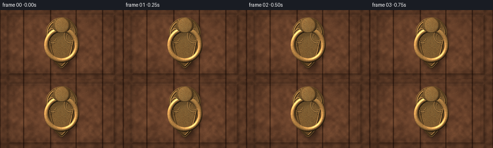
展开代码变化
--- 上一保存版本
+++ 本次保存版本
@@ -203,11 +203,19 @@
)))
rivets = ndimage.gaussian_filter(rivets, 0.35)
- ring_shadow = ndimage.gaussian_filter(np.roll(ring_alpha, (6 * SS, 3 * SS), axis=(0, 1)), 4.2 * SS)
+ # Offset the ring's contact shadow down-right while leaving a narrow light gap
+ # under the upper arc, so the ring visibly stands away from its shield.
+ shifted_ring = np.zeros_like(ring_alpha)
+ shifted_ring[7 * SS:, 4 * SS:] = ring_alpha[:-7 * SS, :-4 * SS]
+ ring_shadow = ndimage.gaussian_filter(shifted_ring, 3.6 * SS)
boss_shadow = ndimage.gaussian_filter(np.roll(boss, (5 * SS, 3 * SS), axis=(0, 1)), 3.4 * SS)
plate_shadow = ndimage.gaussian_filter(np.roll(plate, (7 * SS, 4 * SS), axis=(0, 1)), 5.5 * SS)
knocker_mask = np.clip(plate + ring_alpha + boss + rivets, 0.0, 1.0)
+ # A tight rim light along the upper-left edge of the shield.
+ plate_rim = smoothstep((dist - 0.5) / 1.2) * (1.0 - smoothstep((dist - 2.2) / 1.4))
+ rim_dir = np.clip(-(geom_grad_x(plate_h)) - geom_grad_y(plate_h), 0.0, None)
+ plate_rim *= smoothstep((rim_dir - 0.02) / 0.35)
return {
"plate": plate,
"plate_h": plate_h,
@@ -221,10 +229,19 @@
"plate_shadow": plate_shadow,
"rivets": rivets,
"mask": knocker_mask,
+ "plate_rim": plate_rim,
"yy": yy,
"xx": xx,
"rho": rho,
}
+
+
+def geom_grad_x(field):
+ return np.gradient(field.astype(np.float32), axis=1) * 4.0
+
+
+def geom_grad_y(field):
+ return np.gradient(field.astype(np.float32), axis=0) * 4.0
def oxidation_fields(geom):
@@ -314,10 +331,11 @@
plate_diff, plate_spec, _ = shade(geom["plate_h"], specular_power=27.0)
metal, patina, green_mask, rust_mask = metal_color(geom, fields, tt)
- plate_light = 0.28 + 0.82 * plate_diff[..., None]
+ plate_light = 0.30 + 0.86 * plate_diff[..., None]
plate_col = metal * plate_light
plate_col += (48.0 * (1.0 - 0.58 * patina) * plate_spec)[..., None] * np.array([1.0, 0.76, 0.44], np.float32)
- plate_col *= 0.82
+ plate_col *= 0.91
+ plate_col += (38.0 * geom["plate_rim"])[..., None] * np.array([1.0, 0.82, 0.54], np.float32)
plate_col *= (1.0 - 0.25 * np.exp(-((geom["plate_dist"] - 1.3) / 1.0) ** 2))[..., None]
# Raised scrollwork and rivets get extra local contrast.
@@ -345,8 +363,8 @@
half /= np.linalg.norm(half)
spec = np.power(np.clip(nx * half[0] + ny * half[1] + nz * half[2], 0.0, 1.0), 48.0)
hammer = 0.91 + 0.12 * fbm((FH, FW), 170, scales=(1.5, 3.1, 6.2), weights=(0.55, 0.30, 0.15))
- ring_col = metal * (0.26 + 1.12 * diff[..., None]) * hammer[..., None]
- ring_col += (110.0 * (1.0 - 0.62 * patina) * spec)[..., None] * np.array([1.0, 0.84, 0.55], np.float32)
+ ring_col = metal * (0.32 + 1.23 * diff[..., None]) * hammer[..., None]
+ ring_col += (136.0 * (1.0 - 0.62 * patina) * spec)[..., None] * np.array([1.0, 0.84, 0.55], np.float32)
ring_col *= (0.69 + 0.31 * smoothstep((rho - 25.8) / 1.2))[..., None]
# The lower-right underside of the ring is in shadow; the upper-left catches the sky.
side_shade = np.clip(0.87 - 0.16 * (nx + ny) + 0.09 * nz, 0.55, 1.20)
@@ -393,6 +411,11 @@
base = composite(base, plate_col, geom["ring"])
base = composite(base, plate_col, geom["boss"])
+ # Contact shadow belongs on the door and shield, not on the raised hardware.
+ hardware_shadow = geom["ring_shadow"] * (1.0 - 0.84 * geom["ring"]) * (1.0 - 0.88 * geom["boss"])
+ hardware_shadow *= (0.32 + 0.68 * geom["plate"])
+ base *= (1.0 - 0.23 * hardware_shadow[..., None])
+
# A faint wet sheen and pooled water darkening on the door.
wet = math.exp(-((tt - 0.34) / 0.24) ** 2)
base *= (1.0 - 0.055 * wet)
@@ -415,7 +438,7 @@
grain = rng.normal(0.0, 2.3, (FH, FW, 1)).astype(np.float32)
base += grain
- image = Image.fromarray(np.clip(base, 0.0, 255.0).astype(np.uint8), "RGB")
+ image = Image.fromarray(np.clip(base, 0.0, 255.0).astype(np.uint8))
image = image.resize((W, H), Image.Resampling.LANCZOS)
arr = np.asarray(image, np.float32)
可观测工具轨迹
实际执行的命令与返回图片。
命令 1exit 0
/bin/bash -c "pwd && rg --files -g '"'!*.pyc'"' -g '"'!__pycache__'"' | sed -n '1,200p'"
命令 2exit 0
/bin/bash -c "sed -n '1,240p' prompt.txt; printf '\\n--- RULES ---\\n'; sed -n '1,280p' GENERATION_RULES.md; printf '\\n--- SPEC ---\\n'; sed -n '1,280p' task_spec.json"
命令 3exit 1
/bin/bash -c "find . -maxdepth 3 -type f -printf '%p\\t%k KB\\n' | sort | sed -n '1,240p'; printf '\\n--- media bins ---\\n'; command -v ffmpeg; command -v ffprobe; command -v python3; command -v node; command -v chromium; command -v google-chrome; command -v blender"
命令 4exit 0
/bin/bash -c "sed -n '1,280p' artifact_io.py"
命令 5exit 0
/bin/bash -c "sed -n '1,260p' player_template.html"
命令 6exit 0
/bin/bash -c "python3 - <<'PY' import sys print(sys.version) for m in ['numpy','PIL','scipy','cv2','imageio','matplotlib']: try: mod=__import__(m); print(m, getattr(mod,'__version__','ok')) except Exception as e: print(m, 'MISSING', type(e).__name__) PY"
命令 7exit 0
/bin/bash -c 'MPLCONFIGDIR=.tmp/mpl python3 generate.py'
命令 8exit 0
/bin/bash -c "python3 - <<'PY'
import numpy as np
from PIL import Image
from scipy import ndimage
for i in [0,5,10,15,19]:
a=np.array(Image.open(f'frames/{i:02d}.png')).astype(float)
print(i, 'mean', a.mean((0,1)).round(1), 'std', a.std((0,1)).round(1), 'p99', np.percentile(a,99).round(1))
PY"命令 9exit 0
/bin/bash -c 'MPLCONFIGDIR=.tmp/mpl python3 generate.py'
命令 10exit 0
/bin/bash -c "python3 - <<'PY'
import numpy as np
from PIL import Image
for i in [0,5,10,15,19]:
a=np.array(Image.open(f'frames/{i:02d}.png')).astype(float)
print(i, 'mean', a.mean((0,1)).round(1), 'std', a.std((0,1)).round(1), 'p99', np.percentile(a,99).round(1))
PY"命令 11exit 0
/bin/bash -c "python3 - <<'PY'
from PIL import Image
ims=[Image.open(f'frames/{i:02d}.png') for i in [0,6,12,19]]
out=Image.new('RGB',(1024,288))
for j,im in enumerate(ims): out.paste(im.resize((512,288),Image.Resampling.NEAREST),(j*256,0))
out.save('.tmp/closeups.png')
PY"命令 12exit 0
/bin/bash -c 'MPLCONFIGDIR=.tmp/mpl python3 generate.py'
视觉工具实际返回图片 1
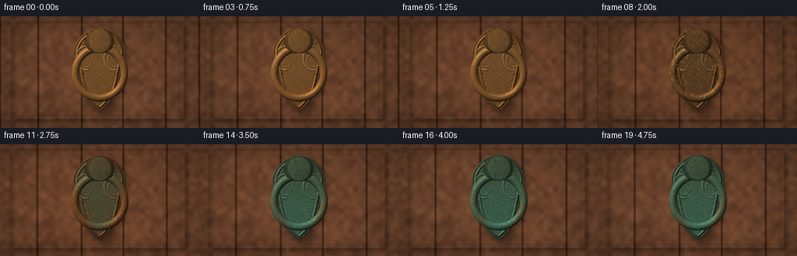
视觉工具实际返回图片 2
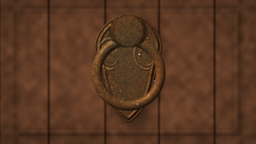
视觉工具实际返回图片 3
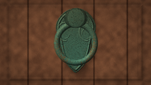
视觉工具实际返回图片 4
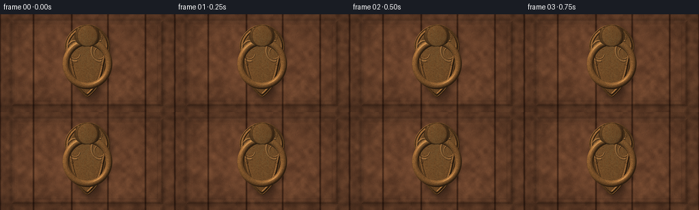
视觉工具实际返回图片 5
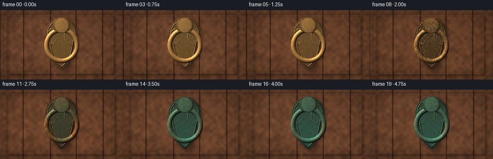
视觉工具实际返回图片 6
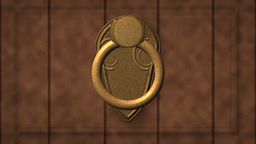
视觉工具实际返回图片 7
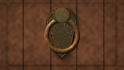
视觉工具实际返回图片 8
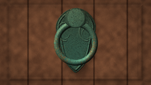
视觉工具实际返回图片 9
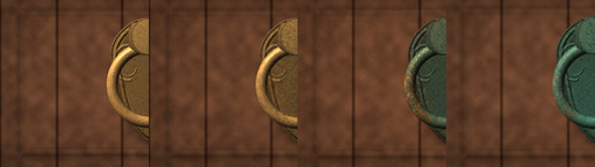
视觉工具实际返回图片 10
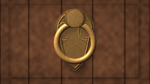
视觉工具实际返回图片 11
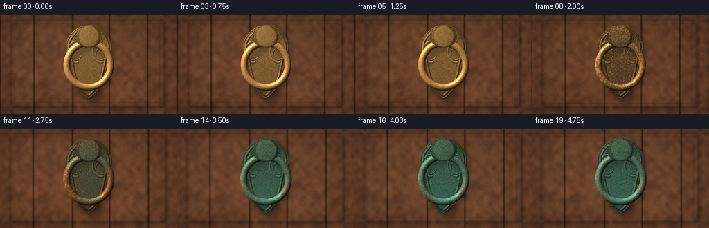
视觉工具实际返回图片 12
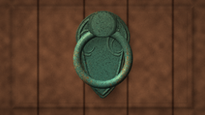
保存候选 4 份；完成命令 12 次；可验证图片返回 12 张。原始 API 响应与完整日志保留在本地。